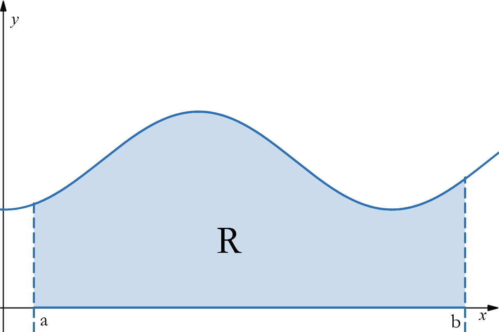
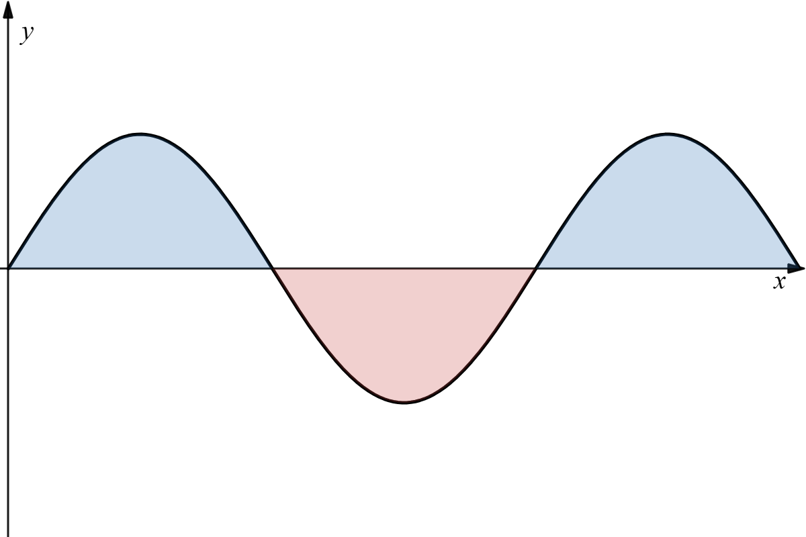

Suppose that the function \(f\) is continuous and nonnegative on the interval \([a, b]\), and let \(R\) denote the region bounded below by the x-axis, bounded on the sides by the vertical lines \(x=a\) and \(x=b\), and bounded above the curve by \(y=f(x)\).
The area \(R\) can be defined by applying the rectangular method.
Divide the interval \([a, b]\) into \(n\) equal subintervals by inserting \(n-1\) equally spaced points between \(a\) and \(b\), and denote those points by \(x_1, x_2, ..., x_{n-1}, x_n\). Each of these subintervals has length \(\Delta x=\frac{b-a}{n}\)
Over each subinterval, construct a rectangle whose hieght is the value of \(f\) at an aribtrarily selected point in the subinterval. Thus if: \(x_1^*, x_2^*, ..., x_{n-1}^*, x_n^*\), the heights of the rectangles will be \(f(x_1^*), f(x_2^*), ..., f(x_{n-1}^*), f(x_n^*)\), and the area will be \(\Delta x(f(x_1^*) + f(x_2^*) + ... + f(x_{n-1}^*) + f(x_n^*))\).
The union of the rectangles form a region \(R_n\) whose area approximates that of region \(R\), that is $$A=\mathrm{area}(R)\approx\mathrm{area}(R_n)\approx\Delta x(f(x_1^*) + f(x_2^*) + ... + f(x_{n-1}^*) + f(x_n^*))$$
$$A\approx\sum_{k=1}^nf(x_k^*)\Delta x$$
Because this approximation becomes increasingly accurate with more subintervals, the area of \(R\) can be defined as the limit of the areas of the approximating regions as \(n\) increases without bound.
$$A=\lim_{n\to\infty}\sum_{k=1}^nf(x_k^*)\Delta x$$
If the function \(f\) is continuous on \([a, b]\) and if \(f(x)\geq0\) for all \(x\) in \([a, b]\), then area \(A\) under the curve \(y=f(x)\) over the interval \([a, b]\) is defined by: $$A=\lim_{n\to\infty}\sum_{k=1}^nf(x_k^*)\Delta x$$
Because \(x^*\) is chosen randomly it is conceivable that we might find a different \(A\) value. However, that is not the case. If \(f\) is continuous then we will get the same \(A\). As \(n\to\infty\), choices for \(x^*\) decrease.
In practice, \(x^*\) is chosen systematically: most commonly, the right or left endpoint or midpoint of a subinterval is selected.
Find a left endpoint approximation for the area under the curve \(f(x)=9-x^2\) over the interval \([0, 3]\) with \(n=3\).
Step 1: Find \(\Delta x\) $$\Delta x=\frac{b-a}{n}$$ $$\Delta x=\frac{3-0}{3}=1$$
Step 2: Sum the area of the rectangles $$L_n=f(x_1^*)\Delta x+f(x_2^*)\Delta x...+f(x_{n-1}^*)\Delta x+f(x_n^*)\Delta x$$ $$\begin{aligned} L_3 &=\Delta x[f(1)+f(2)+f(3)] \\ &=(1)[(9-0^2)+(9-1)^2+(9-2)^2] \\ &=22 \end{aligned}$$
In our definition, we have assumed that \(f\) is continuous and nonnegative on the interval \([a, b]\). But if \(f\) is continuous and has both positive and negative values on \([a, b]\) then our limit
$$\lim_{n\to\infty}\sum_{k=1}^nf(x_k^*)\Delta x$$ no longer represents the area between the curve \(y=f(x)\) and \(x=0\) on the interval \([a, b]\).
If \(f\) has negative values on the interval, this limit represents the difference of areas; [area below the curve when \(f(x)\geq0\) plus the area above the curve when \(f(x)\lt0\)] minus [the area above the curve when \(f(x)\lt0\)].
